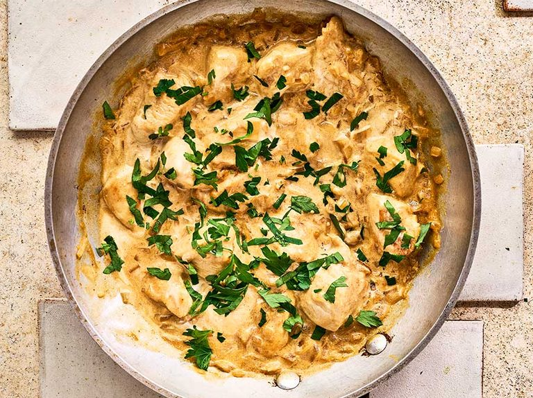

Chicken Stroganoff

Description
Chicken Stroganoff in a creamy mushroom gravy is a quick dinner ready on the table in 30 minutes! Golden skinless chicken breasts smothered in a full-flavoured stroganoff sauce for an easy weeknight dinner.
Ingredients
- 2 tablespoons of olive oil;
- 4 skinless chicken breasts, cut into chunks;
- 2 onions, finely chopped;
- 4 garlic cloves, crushed;
- 1 tablespoons of sweet paprika;
- 400ml chicken stock;
- 4 tablespoons of Dijon mustard;
- 2 tablespoons Worcestershire sauce;
- 200g soured cream or crème fraiche;
- a large handful of parsley, chopped.
Steps
-
Heat half the oil in a frying pan and fry the chicken pieces over a medium high heat, stirring frequently. until golden brown. Season and transfer to a plate.
-
Heat the remaining oil and lower the heat to medium. Fry the onion for 6-8 mins until softened but not golden, then stir in the garlic and paprika. Fry for a minute until fragrant, then pour in the stock, and add the Dijon and Worcestershire sauce. Tip in the seared chicken with any resting juices, and simmer for 5-6 mins until reduced slightly and the chicken is cooked through.
-
Over a low heat, stir in the soured cream until just combined to create a creamy sauce, and it’s just started to simmer. Scatter over the parsley and serve with rice, mash or pasta, if you like.
Go back